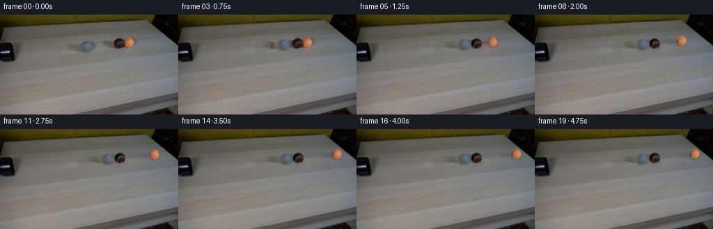
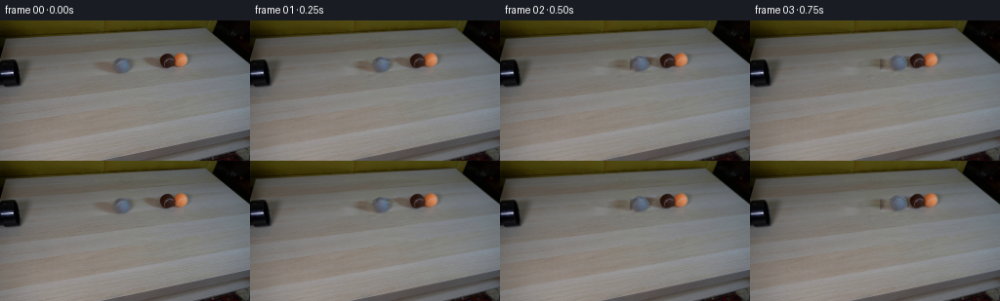
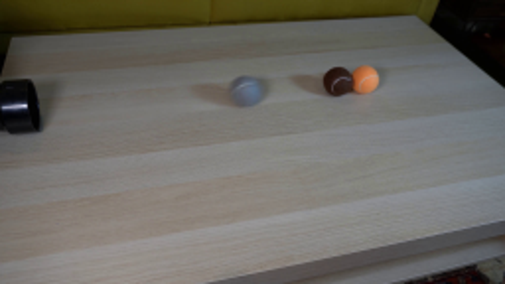
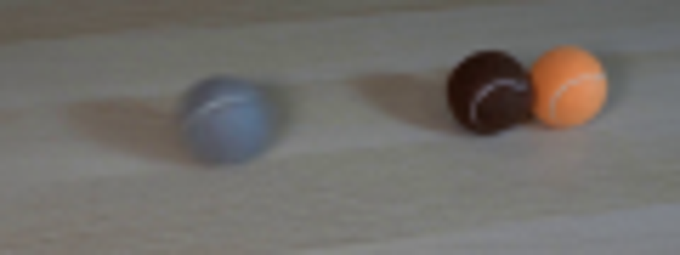
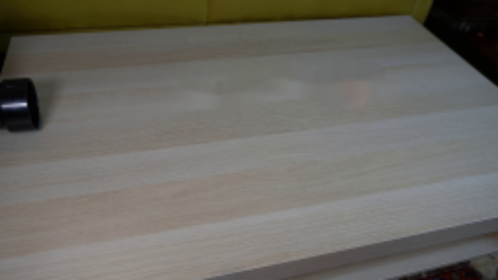
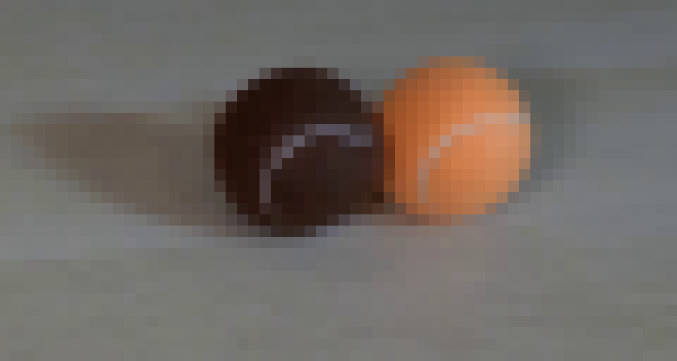
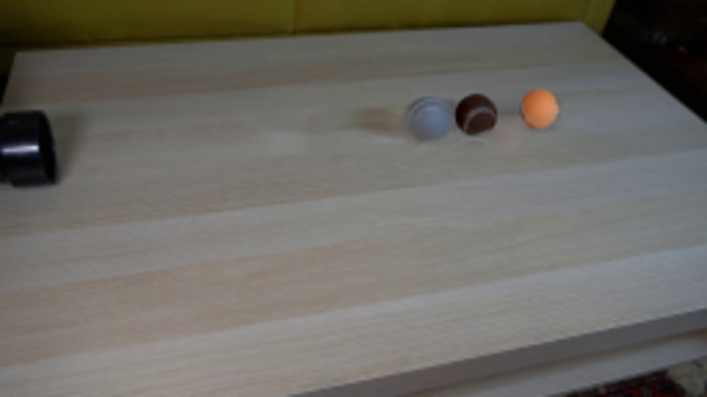
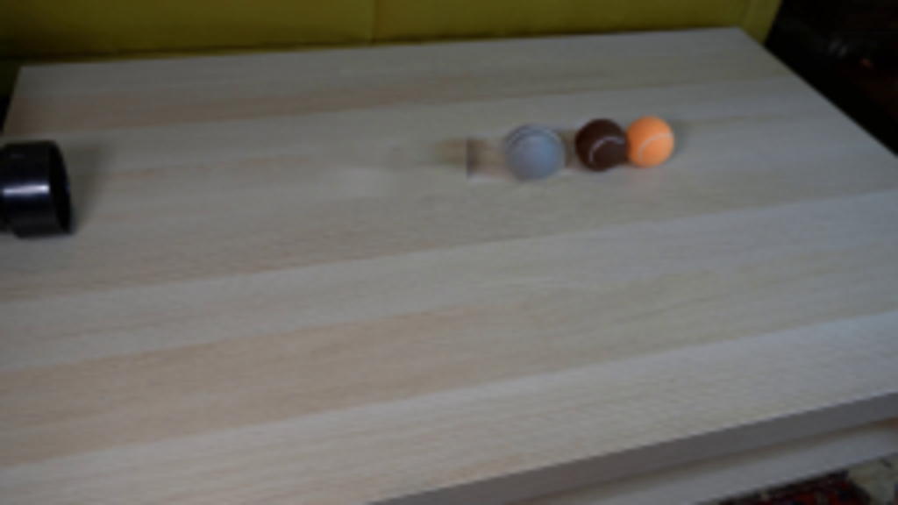
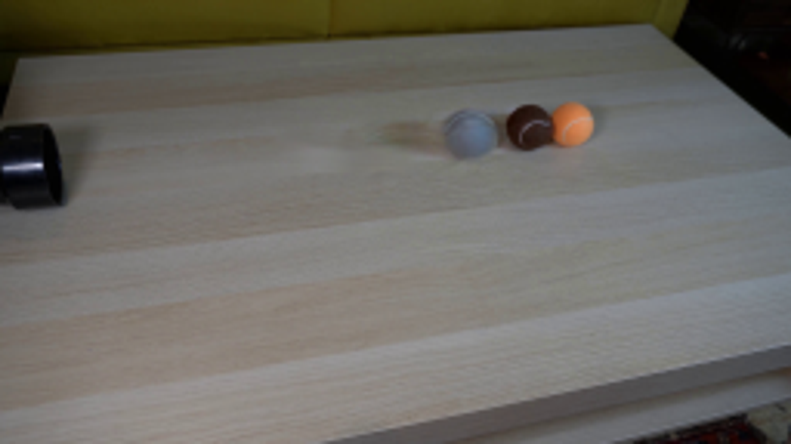

CODING AGENTS AS PIXEL WORLD MODELS
traex/GPT-6.1-Sol · 0028
点击播放 · 原生 RGB 像素
逐轮保存的候选
回放视频、检查图与代码变化。
每份候选均可单独播放。实际图片检查记录在下方工具轨迹中。
候选 01播放与检查图
点击播放 · 原生 RGB 像素


展开代码变化
--- 上一保存版本
+++ 本次保存版本
@@ -0,0 +1,204 @@
+from pathlib import Path
+import numpy as np
+from PIL import Image, ImageDraw, ImageFilter
+import cv2
+from scipy.ndimage import map_coordinates, gaussian_filter
+from scipy.interpolate import CubicSpline
+from artifact_io import save
+
+ROOT=Path(__file__).resolve().parent
+S=4
+W,H=256,144
+
+class Ball:
+ def __init__(self,name,c,r,points,seamcolor):
+ self.name=name
+ self.c=np.array(c,dtype=float)
+ self.r=np.array(r,dtype=float)
+ self.points=np.array(points,float)
+ self.seamcolor=np.array(seamcolor,float)
+
+balls=[
+ Ball('grey',(125.2,46.7),(8.9,8.1),[(-.86,-.1),(-.6,-.34),(-.28,-.48),(.16,-.49),(.60,-.42),(.98,-.19)],(121,135,146)),
+ Ball('brown',(171.5,41.4),(7.6,7.65),[(-.55,.83),(-.56,.5),(-.39,.16),(-.08,-.12),(.29,-.24),(.65,-.16),(.98,.18)],(106,98,103)),
+ Ball('orange',(185.1,40.15),(7.25,7.45),[(-.46,.887),(-.53,.51),(-.40,.12),(-.02,-.18),(.43,-.30),(.86,-.32),(.95,-.312)],(190,163,142))
+]
+
+def setup():
+ original=np.asarray(Image.open(ROOT/'first_frame.png').convert('RGB'))
+ remove=np.zeros((H,W),np.uint8)
+ cv2.ellipse(remove,(125,47),(13,11),0,0,360,255,-1)
+ cv2.ellipse(remove,(108,48),(20,6),8,0,360,255,-1)
+ cv2.ellipse(remove,(173,42),(11,10),0,0,360,255,-1)
+ cv2.ellipse(remove,(187,41),(11,10),0,0,360,255,-1)
+ cv2.ellipse(remove,(155,42),(20,7),10,0,360,255,-1)
+ background=cv2.inpaint(original,remove,4,cv2.INPAINT_NS)
+ # Restore a little fine wooden grain from a neighbouring, unobstructed strip.
+ high=original.astype(float)-gaussian_filter(original.astype(float),sigma=(1.7,1.7,0))
+ texture=np.roll(high,17,axis=0)
+ interior=cv2.GaussianBlur(remove.astype(float)/255,(0,0),1.4)
+ background=np.clip(background.astype(float)+texture*interior[:,:,None]*.40,0,255)
+ bg=cv2.resize(background.astype(np.float32),(W*S,H*S),interpolation=cv2.INTER_CUBIC)
+ # Make front-surface samples using the photograph rather than painting new balls.
+ original_hi=cv2.resize(original.astype(np.float32),(W*S,H*S),interpolation=cv2.INTER_CUBIC)
+ yy,xx=np.mgrid[0:H*S,0:W*S]
+ xx=(xx+.5)/S-.5; yy=(yy+.5)/S-.5
+ for b in balls:
+ ux=(xx-b.c[0])/b.r[0]; vy=(yy-b.c[1])/b.r[1]
+ radial=np.sqrt(ux*ux+vy*vy)
+ alpha=np.clip((1.025-radial)*min(b.r)*S/2,0,1)
+ alpha=gaussian_filter(alpha,.55)
+ # Pixels belong to the sphere, with fractional silhouette coverage.
+ fg=(original_hi-bg*(1-alpha[:,:,None]))/np.maximum(alpha[:,:,None],.12)
+ # Estimate the tiny occluded strip on the brown ball's right edge.
+ if b.name=='brown':
+ synth=render_brown_fill(ux,vy)
+ w=np.clip((xx-177.7)/1.4,0,1)
+ fg=fg*(1-w[:,:,None])+synth*w[:,:,None]
+ fg=np.clip(fg,0,255)
+ # Remove the initial seam from the photographed texture, to animate its rolling.
+ seam_mask=np.zeros((H*S,W*S),np.uint8)
+ points=np.array([(b.c[0]+p[0]*b.r[0]+.5,b.c[1]+p[1]*b.r[1]+.5) for p in b.points])*S
+ cv2.polylines(seam_mask,[np.round(points).astype(np.int32)],False,255,4,cv2.LINE_AA)
+ seam_mask[(radial>.96)]=0
+ clean=cv2.inpaint(np.uint8(np.clip(fg,0,255)),seam_mask,4,cv2.INPAINT_NS).astype(float)
+ # Keep foreground a safe distance from the next ball's occluded edge.
+ b.alpha=alpha
+ b.fg=clean
+ b.radial=radial
+ # A closed seam curve, on the front hemisphere and continuing over the back.
+ n=len(b.points)
+ s=np.linspace(0,1,n)
+ spl=CubicSpline(s,b.points,axis=0)
+ xy=spl(np.linspace(0,1,320))
+ mag=np.linalg.norm(xy,axis=1)
+ xy/=np.maximum(1,mag[:,None])
+ z=np.sqrt(np.maximum(0,1-(xy*xy).sum(axis=1)))
+ front=np.c_[xy,z]
+ back=front[::-1].copy();back[:,2]*=-1
+ # Smooth transition around each silhouette endpoint.
+ b.curve=np.r_[front,back]
+ # Isolate photographed grey cast shadow and the ball together as a signed residual.
+ greyregion=np.zeros((H,W),float);greyregion[32:63,86:141]=1
+ pairregion=np.zeros((H,W),float);pairregion[27:59,133:203]=1
+ delta=original.astype(float)-background
+ greydelta=delta*greyregion[:,:,None]
+ pairdelta=delta*pairregion[:,:,None]
+ return original,background,bg,original_hi,greydelta,pairdelta,xx,yy
+
+def render_brown_fill(u,v):
+ nz=np.sqrt(np.maximum(0,1-u*u-v*v))
+ l=np.clip(.42+.32*u-.30*v+.26*nz,.14,1.2)
+ return np.stack([42*l,29*l,24*l],axis=-1)
+
+def rotated_seam(b,angle,shift,shape):
+ # Rolling axis is parallel to the tabletop and normal to the travel direction.
+ axis=np.array([.083,.92,.383]); axis/=np.linalg.norm(axis)
+ v=b.curve
+ c=np.cos(angle);s=np.sin(angle)
+ p=v*c+np.cross(axis,v)*s+np.outer(v@axis,axis)*(1-c)
+ result=np.zeros(shape,np.uint8)
+ visible=p[:,2]>.025
+ positions=np.c_[(b.c[0]+shift[0]+p[:,0]*b.r[0]+.5)*S,
+ (b.c[1]+shift[1]+p[:,1]*b.r[1]+.5)*S]
+ # Draw only connected visible runs, avoiding artificial lines through the back.
+ cuts=np.r_[0,np.flatnonzero(visible[1:]!=visible[:-1])+1,len(visible)]
+ for a,z in zip(cuts[:-1],cuts[1:]):
+ if visible[a] and z-a>1:
+ cv2.polylines(result,[np.round(positions[a:z]).astype(np.int32)],False,255,2,cv2.LINE_AA)
+ return cv2.GaussianBlur(result.astype(float)/255,(0,0),.50)
+
+def shift_array(a,shift):
+ return cv2.warpAffine(a.astype(np.float32),np.array([[1,0,shift[0]*S],[0,1,shift[1]*S]],np.float32),(W*S,H*S),flags=cv2.INTER_CUBIC,borderMode=cv2.BORDER_CONSTANT)
+
+def paint_ball(frame,b,dx,angle,xx,yy):
+ dy=-.105*dx
+ shift=np.array([dx,dy])
+ # Shadows cast to the left by the unchanged soft light at upper right.
+ x=b.c[0]+dx; y=b.c[1]+dy
+ sh=np.exp(-(((xx-(x-12.4))/14.3)**2+((yy-(y+1.8))/3.5)**2)*1.2)
+ shadow=.17*sh
+ contact=np.exp(-(((xx-x)/7.1)**2+((yy-y-6.5)/2.0)**2)*1.3)
+ shadow+=.22*contact
+ frame=frame*(1-shadow[:,:,None])
+ alpha=shift_array(b.alpha,shift)
+ prem=shift_array(b.fg*b.alpha[:,:,None],shift)
+ mask=rotated_seam(b,angle,shift,alpha.shape)*alpha
+ # The white felt seams are dulled by the same directional light as the ball.
+ u=(xx-x)/b.r[0];v=(yy-y)/b.r[1]
+ light=np.clip(.86+.12*u-.12*v,.60,1.12)
+ seamcol=b.seamcolor[None,None,:]*light[:,:,None]
+ prem=prem*(1-mask[:,:,None]*.70)+seamcol*alpha[:,:,None]*mask[:,:,None]*.70
+ return frame*(1-alpha[:,:,None])+prem
+
+def motions():
+ # Equal-mass rolling balls; free rolling friction and nearly elastic impact.
+ x=np.array([b.c[0] for b in balls],float)
+ v=np.array([39.,0.,0.])
+ out=[]
+ radii=np.array([8.7,7.4,6.35])
+ dt=1/2400
+ impacted=False
+ flags=[]
+ for k in range(20*600):
+ if k%600==0:
+ out.append(x.copy());flags.append(impacted)
+ friction=8.0
+ v=np.maximum(0,v-friction*dt)
+ x+=v*dt
+ for i in (0,1):
+ gap=radii[i]+radii[i+1]
+ if x[i+1]-x[i]<gap and v[i]>v[i+1]:
+ # Conserve momentum across the contact, dissipating a little energy.
+ mean=(v[i]+v[i+1])/2
+ rel=(v[i]-v[i+1])*.82/2
+ v[i]=mean-rel;v[i+1]=mean+rel
+ overlap=gap-(x[i+1]-x[i])
+ x[i]-=overlap/2;x[i+1]+=overlap/2
+ if i==0:impacted=True
+ return np.array(out),flags
+
+def main():
+ original,bgsmall,bg,orig_hi,grey_delta,pair_delta,xx,yy=setup()
+ Path(ROOT/'.tmp').mkdir(exist_ok=True)
+ pos,flags=motions()
+ print('positions',np.round(pos,2))
+ frames=[original]
+ grey=balls[0]
+ gd=cv2.resize(grey_delta.astype(np.float32),(W*S,H*S),interpolation=cv2.INTER_CUBIC)
+ pd=cv2.resize(pair_delta.astype(np.float32),(W*S,H*S),interpolation=cv2.INTER_CUBIC)
+ for k in range(1,20):
+ dx=pos[k]-pos[0]
+ # Target pair remains entirely pixel faithful until the impact.
+ if not flags[k]:
+ frame=bg+pd
+ else:
+ frame=bg.copy()
+ # Orange is drawn last because it initially overlaps the brown silhouette.
+ for i in (1,2):
+ frame=paint_ball(frame,balls[i],dx[i],dx[i]/balls[i].r[0],xx,yy)
+ # A photographic residual retains the characteristic grey felt and cast shadow.
+ sh=[dx[0],-.105*dx[0]]
+ frame+=shift_array(gd,sh)
+ if dx[0]>.2:
+ # Exchange the stationary seam for a geometrically rolling seam while
+ # retaining the original grey photographed silhouette and illumination.
+ alpha=shift_array(grey.alpha,sh)
+ raw=shift_array((orig_hi-bg)*grey.alpha[:,:,None],sh)
+ # Replace the interior only; outside cast shadow remains photographic.
+ inner=np.clip((alpha-.38)/.58,0,1)
+ fg=shift_array(grey.fg*grey.alpha[:,:,None],sh)/np.maximum(alpha[:,:,None],.001)
+ seam=rotated_seam(grey,dx[0]/grey.r[0],sh,alpha.shape)*alpha
+ u=(xx-grey.c[0]-dx[0])/grey.r[0]; vv=(yy-grey.c[1]+.105*dx[0])/grey.r[1]
+ color=grey.seamcolor[None,None,:]*np.clip(.90+.07*u-.12*vv,.65,1.08)[:,:,None]
+ fg=fg*(1-seam[:,:,None]*.62)+color*seam[:,:,None]*.62
+ # The photographed grey residual is composited separately; replace
+ # only its opaque surface with the cleaned and re-seamed sample.
+ frame=frame*(1-inner[:,:,None])+fg*inner[:,:,None]
+ small=cv2.resize(np.clip(frame,0,255).astype(np.float32),(W,H),interpolation=cv2.INTER_AREA)
+ frames.append(np.uint8(np.clip(np.round(small),0,255)))
+ frames=np.stack(frames)
+ save(frames,ROOT)
+ Image.fromarray(np.uint8(bgsmall)).save(ROOT/'.tmp/background.png')
+
+if __name__=='__main__':main()
候选 02播放与检查图
点击播放 · 原生 RGB 像素
展开代码变化
--- 上一保存版本
+++ 本次保存版本
@@ -60,6 +60,7 @@
seam_mask=np.zeros((H*S,W*S),np.uint8)
points=np.array([(b.c[0]+p[0]*b.r[0]+.5,b.c[1]+p[1]*b.r[1]+.5) for p in b.points])*S
cv2.polylines(seam_mask,[np.round(points).astype(np.int32)],False,255,4,cv2.LINE_AA)
+ seam_mask=cv2.dilate(seam_mask,np.ones((3,3),np.uint8))
seam_mask[(radial>.96)]=0
clean=cv2.inpaint(np.uint8(np.clip(fg,0,255)),seam_mask,4,cv2.INPAINT_NS).astype(float)
# Keep foreground a safe distance from the next ball's occluded edge.
@@ -79,8 +80,8 @@
# Smooth transition around each silhouette endpoint.
b.curve=np.r_[front,back]
# Isolate photographed grey cast shadow and the ball together as a signed residual.
- greyregion=np.zeros((H,W),float);greyregion[32:63,86:141]=1
- pairregion=np.zeros((H,W),float);pairregion[27:59,133:203]=1
+ greyregion=np.zeros((H,W),float);greyregion[31:64,85:140]=1
+ pairregion=np.zeros((H,W),float);pairregion[26:60,140:203]=1
delta=original.astype(float)-background
greydelta=delta*greyregion[:,:,None]
pairdelta=delta*pairregion[:,:,None]
@@ -196,6 +197,7 @@
# only its opaque surface with the cleaned and re-seamed sample.
frame=frame*(1-inner[:,:,None])+fg*inner[:,:,None]
small=cv2.resize(np.clip(frame,0,255).astype(np.float32),(W,H),interpolation=cv2.INTER_AREA)
+ small+=original.astype(float)-cv2.resize(orig_hi,(W,H),interpolation=cv2.INTER_AREA)
frames.append(np.uint8(np.clip(np.round(small),0,255)))
frames=np.stack(frames)
save(frames,ROOT)
可观测工具轨迹
实际执行的命令与返回图片。
命令 1exit 0
/bin/bash -lc 'ls -la && cat prompt.txt && cat GENERATION_RULES.md'
命令 2exit 0
/bin/bash -lc "cat artifact_io.py && python - <<'PY'
from PIL import Image
im=Image.open('first_frame.png');print(im.size);im.resize((1024,576)).save('.tmp/enlarged.png')
PY"命令 3exit 0
/bin/bash -lc "python - <<'PY'
from PIL import Image
im=Image.open('first_frame.png')
im.crop((85,25,205,70)).resize((960,360)).save('.tmp/balls.png')
import importlib.util
for m in ['numpy','PIL','scipy','cv2']:
print(m, bool(importlib.util.find_spec(m)))
PY"命令 4exit 0
/bin/bash -lc "python - <<'PY'
from PIL import Image
im=Image.open('first_frame.png')
im.crop((145,28,205,60)).resize((960,512),Image.Resampling.NEAREST).save('.tmp/pixels.png')
PY"命令 5exit 0
/bin/bash -lc "python - <<'PY'
import cv2, numpy as np
im=cv2.imread('first_frame.png')
m=np.zeros(im.shape[:2],np.uint8)
cv2.ellipse(m,(125,47),(13,11),0,0,360,255,-1)
cv2.ellipse(m,(108,48),(20,6),8,0,360,255,-1)
cv2.ellipse(m,(173,42),(11,10),0,0,360,255,-1)
cv2.ellipse(m,(187,41),(11,10),0,0,360,255,-1)
cv2.ellipse(m,(155,42),(20,7),10,0,360,255,-1)
for meth,name in [(cv2.INPAINT_TELEA,'telea'),(cv2.INPAINT_NS,'ns')]:
out=cv2.inpaint(im,m,4,meth);cv2.imwrite('.tmp/bg_'+name+'.png',out);cv2.imwrite('.tmp/bg_'+name+'_big.png',cv2.resize(out,(1024,576)))
cv2.imwrite('.tmp/mask.png',m)
PY"命令 6exit 0
/bin/bash -lc "cat > generate.py <<'PY'
from pathlib import Path
import numpy as np
from PIL import Image, ImageDraw, ImageFilter
import cv2
from scipy.ndimage import map_coordinates, gaussian_filter
from scipy.interpolate import CubicSpline
from artifact_io import save
ROOT=Path(__file__).resolve().parent
S=4
W,H=256,144
class Ball:
def __init__(self,name,c,r,points,seamcolor):
self.name=name
self.c=np.array(c,dtype=float)
self.r=np.array(r,dtype=float)
self.points=np.array(points,float)
self.seamcolor=np.array(seamcolor,float)
balls=[
Ball('grey',(125.2,46.7),(8.9,8.1),[(-.86,-.1),(-.6,-.34),(-.28,-.48),(.16,-.49),(.60,-.42),(.98,-.19)],(121,135,146)),
Ball('brown',(171.5,41.4),(7.6,7.65),[(-.55,.83),(-.56,.5),(-.39,.16),(-.08,-.12),(.29,-.24),(.65,-.16),(.98,.18)],(106,98,103)),
Ball('orange',(185.1,40.15),(7.25,7.45),[(-.46,.887),(-.53,.51),(-.40,.12),(-.02,-.18),(.43,-.30),(.86,-.32),(.95,-.312)],(190,163,142))
]
def setup():
original=np.asarray(Image.open(ROOT/'first_frame.png').convert('RGB'))
remove=np.zeros((H,W),np.uint8)
cv2.ellipse(remove,(125,47),(13,11),0,0,360,255,-1)
cv2.ellipse(remove,(108,48),(20,6),8,0,360,255,-1)
cv2.ellipse(remove,(173,42),(11,10),0,0,360,255,-1)
cv2.ellipse(remove,(187,41),(11,10),0,0,360,255,-1)
cv2.ellipse(remove,(155,42),(20,7),10,0,360,255,-1)
background=cv2.inpaint(original,remove,4,cv2.INPAINT_NS)
# Restore a little fine wooden grain from a neighbouring, unobstructed strip.
high=original.astype(float)-gaussian_filter(original.astype(float),sigma=(1.7,1.7,0))
texture=np.roll(high,17,axis=0)
interior=cv2.GaussianBlur(remove.astype(float)/255,(0,0),1.4)
background=np.clip(background.astype(float)+texture*interior[:,:,None]*.40,0,255)
bg=cv2.resize(background.astype(np.float32),(W*S,H*S),interpolation=cv2.INTER_CUBIC)
# Make front-surface samples using the photograph rather than painting new balls.
original_hi=cv2.resize(original.astype(np.float32),(W*S,H*S),interpolation=cv2.INTER_CUBIC)
yy,xx=np.mgrid[0:H*S,0:W*S]
xx=(xx+.5)/S-.5; yy=(yy+.5)/S-.5
for b in balls:
ux=(xx-b.c[0])/b.r[0]; vy=(yy-b.c[1])/b.r[1]
radial=np.sqrt(ux*ux+vy*vy)
alpha=np.clip((1.025-radial)*min(b.r)*S/2,0,1)
alpha=gaussian_filter(alpha,.55)
# Pixels belong to the sphere, with fractional silhouette coverage.
fg=(original_hi-bg*(1-alpha[:,:,None]))/np.maximum(alpha[:,:,None],.12)
# Estimate the tiny occluded strip on the brown ball's right edge.
if b.name=='brown':
synth=render_brown_fill(ux,vy)
w=np.clip((xx-177.7)/1.4,0,1)
fg=fg*(1-w[:,:,None])+synth*w[:,:,None]
fg=np.clip(fg,0,255)
# Remove the initial seam from the photographed texture, to animate its rolling.
seam_mask=np.zeros((H*S,W*S),np.uint8)
points=np.array([(b.c[0]+p[0]*b.r[0]+.5,b.c[1]+p[1]*b.r[1]+.5) for p in b.points])*S
cv2.polylines(seam_mask,[np.round(points).astype(np.int32)],False,255,4,cv2.LINE_AA)
seam_mask[(radial>.96)]=0
clean=cv2.inpaint(np.uint8(np.clip(fg,0,255)),seam_mask,4,cv2.INPAINT_NS).astype(float)
# Keep foreground a safe distance from the next ball's occluded edge.
b.alpha=alpha
b.fg=clean
b.radial=radial
# A closed seam curve, on the front hemisphere and continuing over the back.
n=len(b.points)
s=np.linspace(0,1,n)
spl=CubicSpline(s,b.points,axis=0)
xy=spl(np.linspace(0,1,320))
mag=np.linalg.norm(xy,axis=1)
xy/=np.maximum(1,mag[:,None])
z=np.sqrt(np.maximum(0,1-(xy*xy).sum(axis=1)))
front=np.c_[xy,z]
back=front[::-1].copy();back[:,2]*=-1
# Smooth transition around each silhouette endpoint.
b.curve=np.r_[front,back]
# Isolate photographed grey cast shadow and the ball together as a signed residual.
greyregion=np.zeros((H,W),float);greyregion[32:63,86:141]=1
pairregion=np.zeros((H,W),float);pairregion[27:59,133:203]=1
delta=original.astype(float)-background
greydelta=delta*greyregion[:,:,None]
pairdelta=delta*pairregion[:,:,None]
return original,background,bg,original_hi,greydelta,pairdelta,xx,yy
def render_brown_fill(u,v):
nz=np.sqrt(np.maximum(0,1-u*u-v*v))
l=np.clip(.42+.32*u-.30*v+.26*nz,.14,1.2)
return np.stack([42*l,29*l,24*l],axis=-1)
def rotated_seam(b,angle,shift,shape):
# Rolling axis is parallel to the tabletop and normal to the travel direction.
axis=np.array([.083,.92,.383]); axis/=np.linalg.norm(axis)
v=b.curve
c=np.cos(angle);s=np.sin(angle)
p=v*c+np.cross(axis,v)*s+np.outer(v@axis,axis)*(1-c)
result=np.zeros(shape,np.uint8)
visible=p[:,2]>.025
positions=np.c_[(b.c[0]+shift[0]+p[:,0]*b.r[0]+.5)*S,
(b.c[1]+shift[1]+p[:,1]*b.r[1]+.5)*S]
# Draw only connected visible runs, avoiding artificial lines through the back.
cuts=np.r_[0,np.flatnonzero(visible[1:]"'!=visible[:-1])+1,len(visible)]
for a,z in zip(cuts[:-1],cuts[1:]):
if visible[a] and z-a>1:
cv2.polylines(result,[np.round(positions[a:z]).astype(np.int32)],False,255,2,cv2.LINE_AA)
return cv2.GaussianBlur(result.astype(float)/255,(0,0),.50)
def shift_array(a,shift):
return cv2.warpAffine(a.astype(np.float32),np.array([[1,0,shift[0]*S],[0,1,shift[1]*S]],np.float32),(W*S,H*S),flags=cv2.INTER_CUBIC,borderMode=cv2.BORDER_CONSTANT)
def paint_ball(frame,b,dx,angle,xx,yy):
dy=-.105*dx
shift=np.array([dx,dy])
# Shadows cast to the left by the unchanged soft light at upper right.
x=b.c[0]+dx; y=b.c[1]+dy
sh=np.exp(-(((xx-(x-12.4))/14.3)**2+((yy-(y+1.8))/3.5)**2)*1.2)
shadow=.17*sh
contact=np.exp(-(((xx-x)/7.1)**2+((yy-y-6.5)/2.0)**2)*1.3)
shadow+=.22*contact
frame=frame*(1-shadow[:,:,None])
alpha=shift_array(b.alpha,shift)
prem=shift_array(b.fg*b.alpha[:,:,None],shift)
mask=rotated_seam(b,angle,shift,alpha.shape)*alpha
# The white felt seams are dulled by the same directional light as the ball.
u=(xx-x)/b.r[0];v=(yy-y)/b.r[1]
light=np.clip(.86+.12*u-.12*v,.60,1.12)
seamcol=b.seamcolor[None,None,:]*light[:,:,None]
prem=prem*(1-mask[:,:,None]*.70)+seamcol*alpha[:,:,None]*mask[:,:,None]*.70
return frame*(1-alpha[:,:,None])+prem
def motions():
# Equal-mass rolling balls; free rolling friction and nearly elastic impact.
x=np.array([b.c[0] for b in balls],float)
v=np.array([39.,0.,0.])
out=[]
radii=np.array([8.7,7.4,6.35])
dt=1/2400
impacted=False
flags=[]
for k in range(20*600):
if k%600==0:
out.append(x.copy());flags.append(impacted)
friction=8.0
v=np.maximum(0,v-friction*dt)
x+=v*dt
for i in (0,1):
gap=radii[i]+radii[i+1]
if x[i+1]-x[i]<gap and v[i]>v[i+1]:
# Conserve momentum across the contact, dissipating a little energy.
mean=(v[i]+v[i+1])/2
rel=(v[i]-v[i+1])*.82/2
v[i]=mean-rel;v[i+1]=mean+rel
overlap=gap-(x[i+1]-x[i])
x[i]-=overlap/2;x[i+1]+=overlap/2
if i==0:impacted=True
return np.array(out),flags
def main():
original,bgsmall,bg,orig_hi,grey_delta,pair_delta,xx,yy=setup()
Path(ROOT/'"'.tmp').mkdir(exist_ok=True)
pos,flags=motions()
print('positions',np.round(pos,2))
frames=[original]
grey=balls[0]
gd=cv2.resize(grey_delta.astype(np.float32),(W*S,H*S),interpolation=cv2.INTER_CUBIC)
pd=cv2.resize(pair_delta.astype(np.float32),(W*S,H*S),interpolation=cv2.INTER_CUBIC)
for k in range(1,20):
dx=pos[k]-pos[0]
# Target pair remains entirely pixel faithful until the impact.
if not flags[k]:
frame=bg+pd
else:
frame=bg.copy()
# Orange is drawn last because it initially overlaps the brown silhouette.
for i in (1,2):
frame=paint_ball(frame,balls[i],dx[i],dx[i]/balls[i].r[0],xx,yy)
# A photographic residual retains the characteristic grey felt and cast shadow.
sh=[dx[0],-.105*dx[0]]
frame+=shift_array(gd,sh)
if dx[0]>.2:
# Exchange the stationary seam for a geometrically rolling seam while
# retaining the original grey photographed silhouette and illumination.
alpha=shift_array(grey.alpha,sh)
raw=shift_array((orig_hi-bg)*grey.alpha[:,:,None],sh)
# Replace the interior only; outside cast shadow remains photographic.
inner=np.clip((alpha-.38)/.58,0,1)
fg=shift_array(grey.fg*grey.alpha[:,:,None],sh)/np.maximum(alpha[:,:,None],.001)
seam=rotated_seam(grey,dx[0]/grey.r[0],sh,alpha.shape)*alpha
u=(xx-grey.c[0]-dx[0])/grey.r[0]; vv=(yy-grey.c[1]+.105*dx[0])/grey.r[1]
color=grey.seamcolor[None,None,:]*np.clip(.90+.07*u-.12*vv,.65,1.08)[:,:,None]
fg=fg*(1-seam[:,:,None]*.62)+color*seam[:,:,None]*.62
# The photographed grey residual is composited separately; replace
# only its opaque surface with the cleaned and re-seamed sample.
frame=frame*(1-inner[:,:,None])+fg*inner[:,:,None]
small=cv2.resize(np.clip(frame,0,255).astype(np.float32),(W,H),interpolation=cv2.INTER_AREA)
frames.append(np.uint8(np.clip(np.round(small),0,255)))
frames=np.stack(frames)
save(frames,ROOT)
Image.fromarray(np.uint8(bgsmall)).save(ROOT/'.tmp/background.png')
if __name__=='__main__':main()
PY
python generate.py"命令 7exit 0
/bin/bash -lc "python - <<'PY'
from PIL import Image
for k in [1,3,5,19]:
im=Image.open(f'frames/{k:02d}.png');im.resize((1024,576)).save(f'.tmp/{k:02d}big.png')
PY"命令 8exit 0
/bin/bash -lc "python - <<'PY'
p='generate.py'
s=open(p).read().replace('cv2.LINE_AA)\\n seam_mask[(radial>.96)]','cv2.LINE_AA)\\n seam_mask=cv2.dilate(seam_mask,np.ones((3,3),np.uint8))\\n seam_mask[(radial>.96)]')
s=s.replace('greyregion[32:63,86:141]=1','greyregion[31:64,85:140]=1').replace('pairregion[27:59,133:203]=1','pairregion[26:60,140:203]=1')
s=s.replace('small=cv2.resize(np.clip(frame,0,255).astype(np.float32),(W,H),interpolation=cv2.INTER_AREA)','small=cv2.resize(np.clip(frame,0,255).astype(np.float32),(W,H),interpolation=cv2.INTER_AREA)\\n small+=original.astype(float)-cv2.resize(orig_hi,(W,H),interpolation=cv2.INTER_AREA)')
open(p,'w').write(s)
PY
python generate.py
python - <<'PY'
from PIL import Image
im=Image.open('frames/03.png');im.resize((1024,576)).save('.tmp/03big.png')
PY"命令 9exit 1
/bin/bash -lc "python - <<'PY'
import numpy as np
from PIL import Image
p=np.load('pixels.npz')['pixels']
a=np.array(Image.open('first_frame.png').convert('RGB'),dtype=np.uint32)
assert p.shape==(144,256,20)
assert np.array_equal(p[:,:,0],(a[:,:,0]<<16)|(a[:,:,1]<<8)|a[:,:,2])
print('Verified: 20 RGB frames, 256x144; frame 00 matches exactly.')
PY
command -v ffmpeg"视觉工具实际返回图片 1

视觉工具实际返回图片 2

视觉工具实际返回图片 3

视觉工具实际返回图片 4

视觉工具实际返回图片 5

视觉工具实际返回图片 6

视觉工具实际返回图片 7

视觉工具实际返回图片 8

保存候选 2 份；完成命令 9 次；可验证图片返回 8 张。原始 API 响应与完整日志保留在本地。